0x00 前置准备
在开始本节教学之前，请先按照《「BrowEdit3 入门教程 02」 准备工作》的方法创建一张新地图。
0x20 操作面板介绍
在顶部模式菜单选择 Height edit mode(F1) 切换到高度编辑模式，会切换到 Height Edit 高度编辑面板：
顶部的 Tool 工具菜单提供了高度编辑最核心的 7 大选区方法，从左到右依次为：
Rectangle Select矩形选区Lasso Select自由套索选区Height Doodling自由笔刷涂层Magic Wand (Texture)纹理魔术棒Magic Wand (Height)高度魔术棒Select All (Texture)纹理全选Select All (Height)高度全选
看上去似乎很复杂，但其实本质上只有两类工具：
- 不需要「选定区域」操作的：
Height Doodling自由笔刷涂层
- 需要先「选定区域」才能操作的：
Rectangle Select矩形选区Lasso Select自由套索选区Magic Wand (Texture)纹理魔术棒Select All (Texture)纹理全选Magic Wand (Height)高度魔术棒Select All (Height)高度全选
而且需要「选定区域」的工具，除了选择区域方式不一样，高度编辑的方式都是一样的，是不是瞬间就觉得简单了不少？
0x20 非「选定区域」工具
由于只有一个工具 Height Doodling 自由笔刷涂层，我们先学习怎么用。
点击 Height Doodling 按钮后，出现三个 Brush Options 笔刷设置：
Brush Size笔触大小： 控制笔刷影响范围，取值0-10，若 5 即表示5x5范围Brush Hardness笔刷硬度： 取值0-1，硬度越大，笔刷中心区域越尖锐；反之越圆润Brush Speed笔刷速度： 取值0-1，速度越大，笔刷中心区域上升越快
使用方法很简单： 按住鼠标左键、在地图上指定区域不断涂抹即可增加该区域的高度，类似 PhotoShop 的笔刷工具。
每个值都可以自行修改尝试一下效果：
- 双击可修改值
- 或者按住数字左右拉动也可变更值
- 笔触大小可以按键盘
+/-增减
使用笔刷效果，可以轻易创建一片山脉。
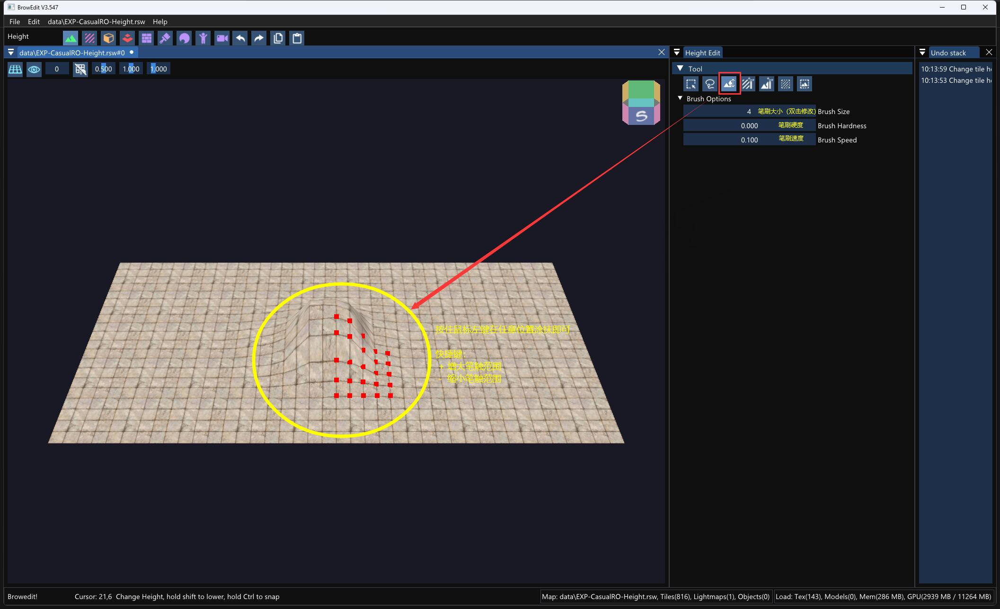
这里有个 BUG，当 Brush Hardness 笔刷硬度双击设置 >=2 的值时，笔刷范围内的边缘区域会下沉，硬度越大下沉越快：
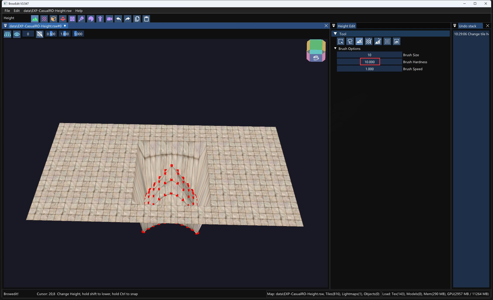
0x30 「选定区域」工具
这里先介绍不同工具的选区方式，再挑其中一个介绍高度编辑要怎么操作。
Rectangle Select 矩形选区，拖动鼠标即可在地图上选择一个矩形区域：
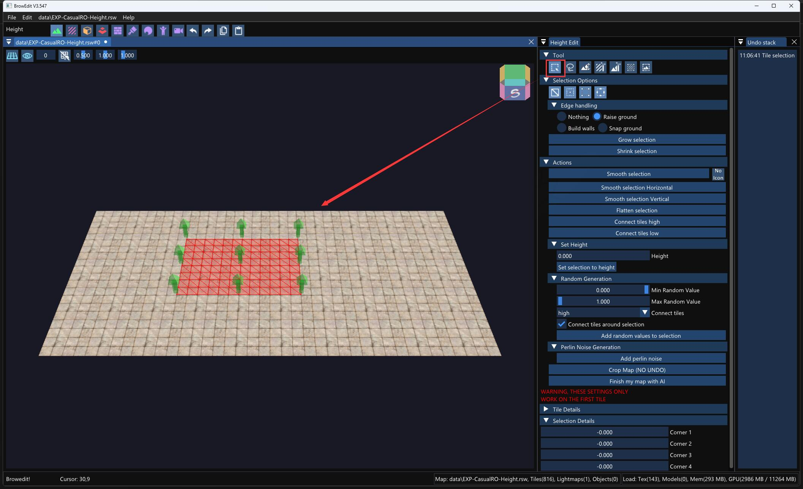
Lasso Select 自由套索选区，拖动鼠标，会根据鼠标轨迹在地图上构建一个不规则区域：
Magic Wand (Texture) 纹理魔术棒，用过 PhotoShop 就很熟了，除了不支持容差之外，都是相同的操作：
- 在某个位置点击鼠标后，与该位置纹理相同、且连通的区域，自动全部选上
- 如果有多个不连通区域需要同时选中：按住
shift + 左键增加区域、按住ctrl + 左键减去区域
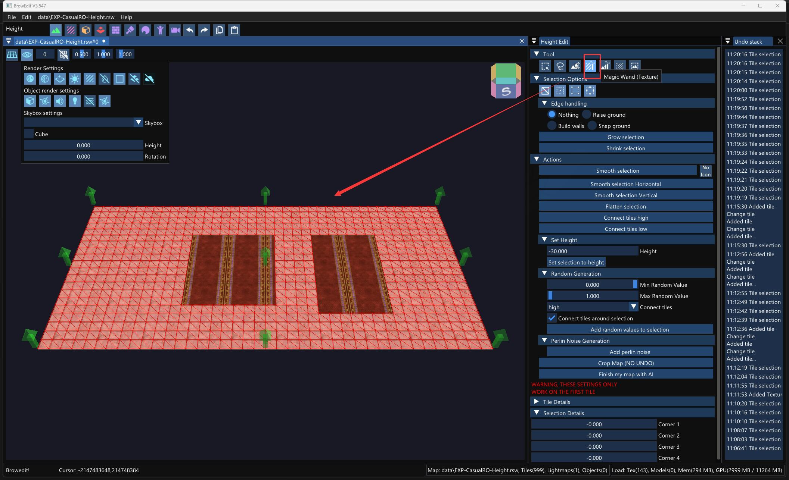
Select All (Texture) 纹理全选，在某个位置点击鼠标后，全地图与该位置纹理相同的区域，不管是否连通都会自动选上：
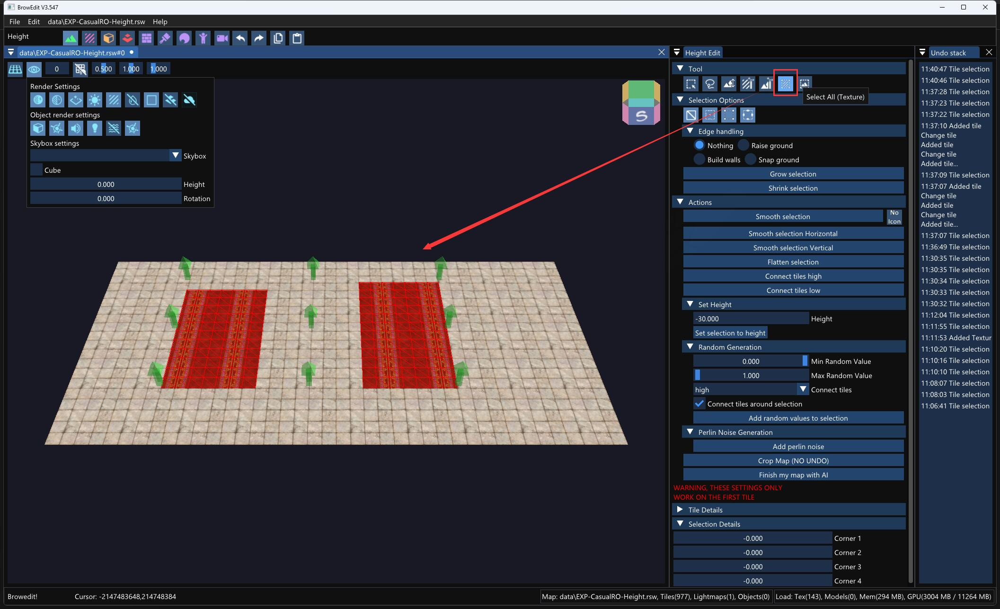
Magic Wand (Height) 高度魔术棒，类似纹理魔术棒，自动选中高度相同、且连通的区域：
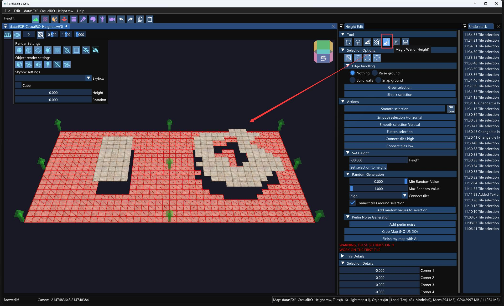
Select All (Height) 高度全选，在某个位置点击鼠标后，全地图与该位置高度相同的区域，不管是否连通都会自动选上：
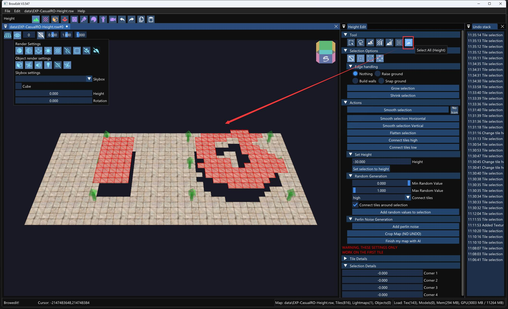
至此所有选区方式都介绍完毕了，因为选区的「高度编辑」方法都是一样的，下面只挑「矩形选区」进行说明。
0x40 箭头设置
当我们选中一个区域时，该区域四周会出现若干个箭头，这些箭头就是高度编辑的核心。
这些箭头本身有一些设置按钮：
- 高度编辑面板
Selection Options选区选项出现了 4 个按钮：Change the way quads are split into triangles: 四边形切割为三角形方向Show Center Arrow: 显示/隐藏选区中心的箭头Show Corner Arrows: 显示/隐藏选区四角的箭头Show Edge Arrow: 显示/隐藏选区边缘的箭头
- 地图面板左上角有 3 个控制箭头样式的设置：
Gadget Opacity: 箭头透明度Gadget Scale: 箭头大小Gadget thickness: 箭头粗细
一般而言可以不用管这些按钮，但都可以修改一下，感受一下效果。
这些主要是为了在地图对象比较密集时，可以精准选中要操作的箭头。
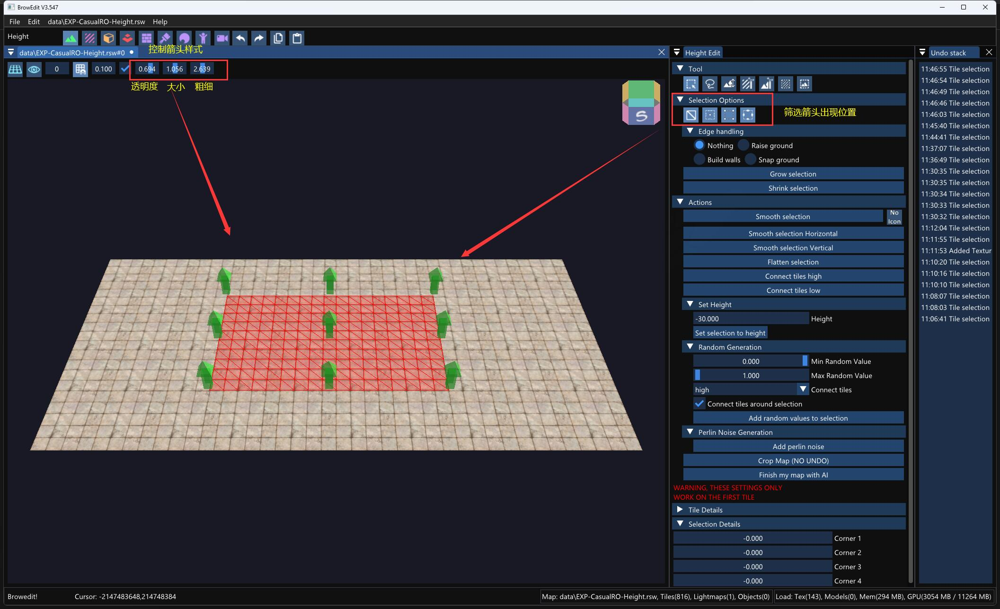
特别说明一下的是， Change the way quads are split into triangles 三角切割方向。
当我们放大每个选中的贴片后，可以看到 “从左上到右下” 被切割为两个三角形。
当点击按钮时，按钮变成从 “从左下到右上” （但是地图没有发生变化，不用在意）：
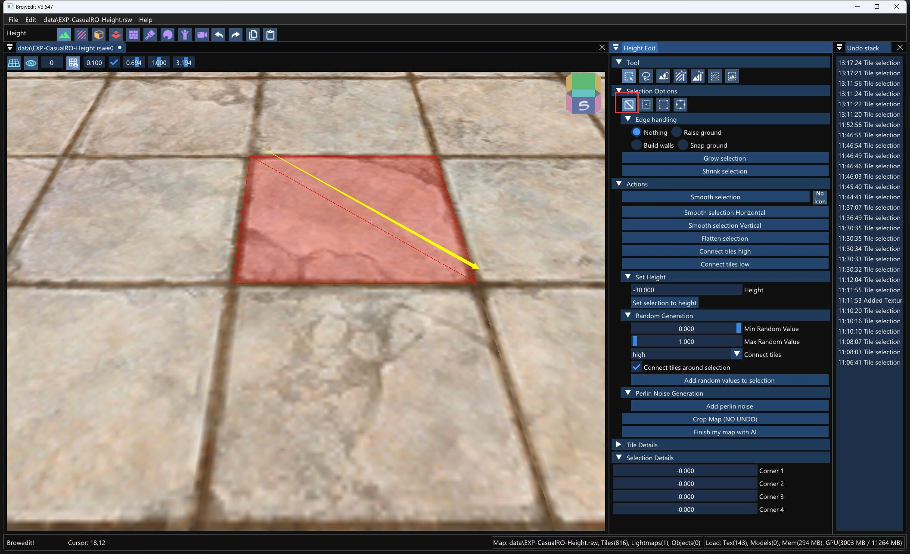
这个方向对于后续「四角地面拉出」时有影响，这里先卖个关子。
0x50 地面拉出
当我们鼠标按住某个箭头向上/向下拉时，就可以把选中区域的地面拉出。
例如，拉中心箭头会把整片区域平行拉出：
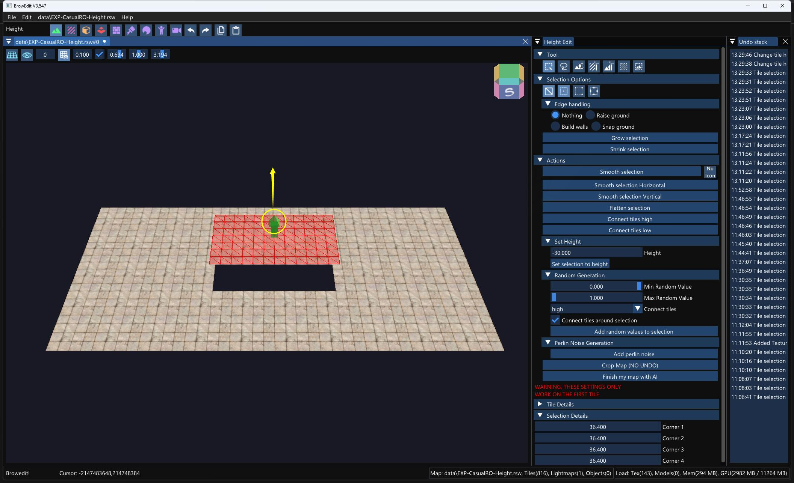
拉四边箭头会把区域一边斜着拉出：
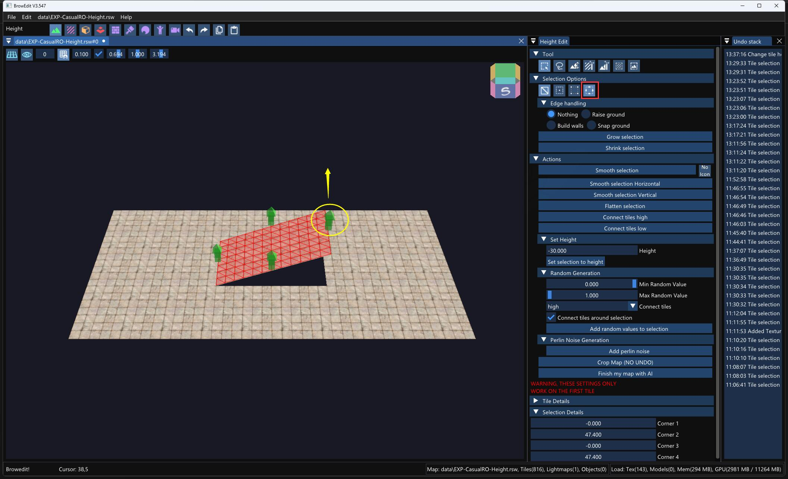
拉四角箭头会把区域一角折叠拉出：
而且当拉角箭头时，如果改变 Change the way quads are split into triangles 三角切割方向，可以看到折叠方向变化了：
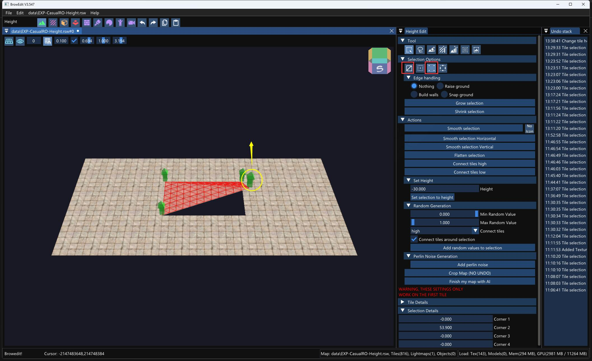
0x60 边缘处理
不难发现，地面拉出时，和原有的地面是直接断开的，断开的位置应该怎么连接上呢？
其实这是 Edge handling 边缘处理效果导致的：
Nothing： 无（真空）Build walls： 建造墙壁Raise ground： 抬高地面Snap ground： 对齐地面
因为默认值就是 Nothing 真空效果，所以我们拉出地面后才是断开的。
当我们选中 Build walls 建造墙壁后，再拉出地面，可以发现有墙面垂直连接拉出的地面：
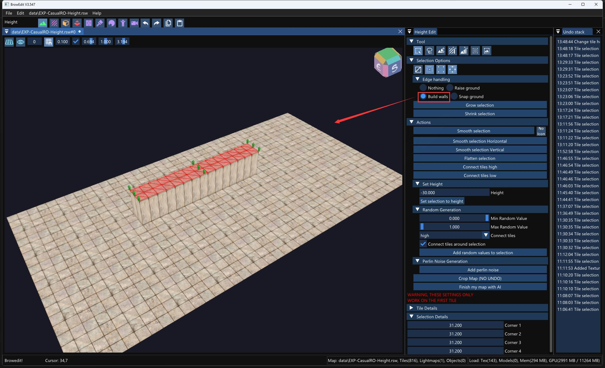
当我们选中 Raise ground 或 Snap ground 再拉出地面时，可以发现有斜坡连接拉出的地面，但是我确实没看出来两者有什么区别：
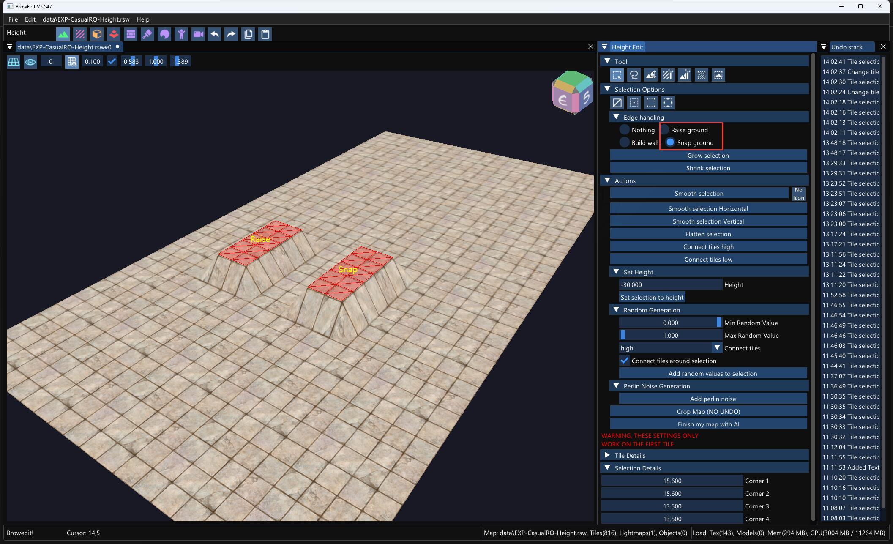
0x70 快速扩大/缩小选区
当我们选中一个区域时，譬如一个 5x7 选区，若我们：
- 点击
Grow selection或按下+： 选区会自动扩大一圈变成7x9 - 点击
Shrink selection或按下-： 选区会自动缩小一圈变成3x5
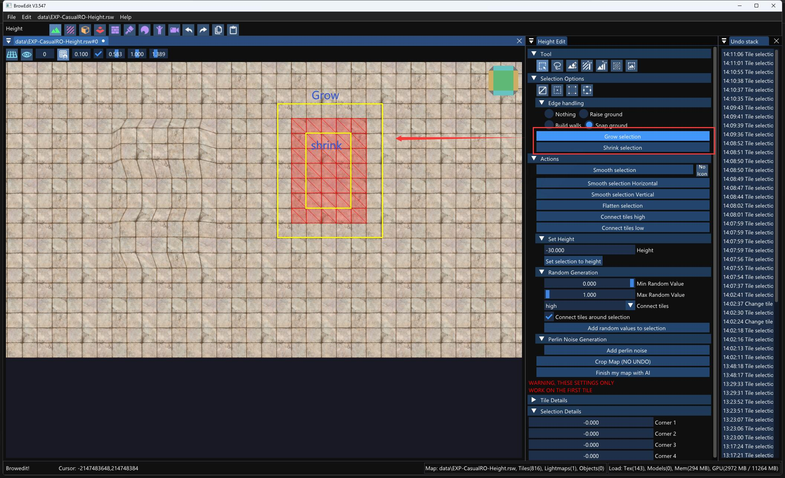
0x80 修复地形
对于参差不齐的地形，若我们希望恢复成平整，就可以使用 Smooth 或 Flatten。
例如对于不在同一水平面的地形，如果不断点击 Smooth selection 平滑选区，就可以将其逐渐恢复平整：
Smooth selection Horizontal水平平滑选区 和Smooth selection Vertical垂直平滑选区 的效果都差不多，只是平滑方向不一样而已，有兴趣可以自己测试一下。
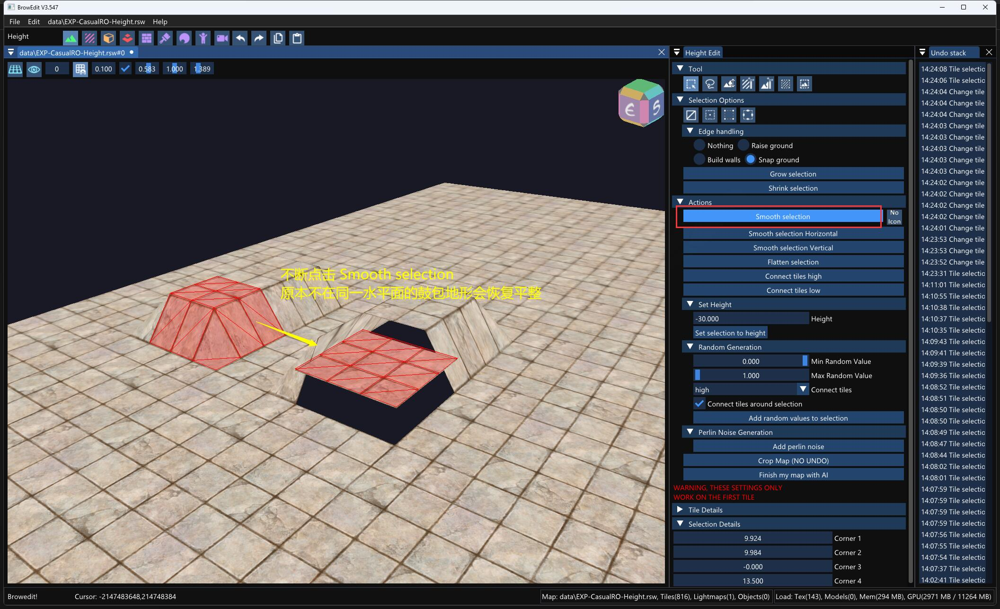
Flatten selection 扁平化选区 则是一步到位，点击一下选区即完全恢复水平：
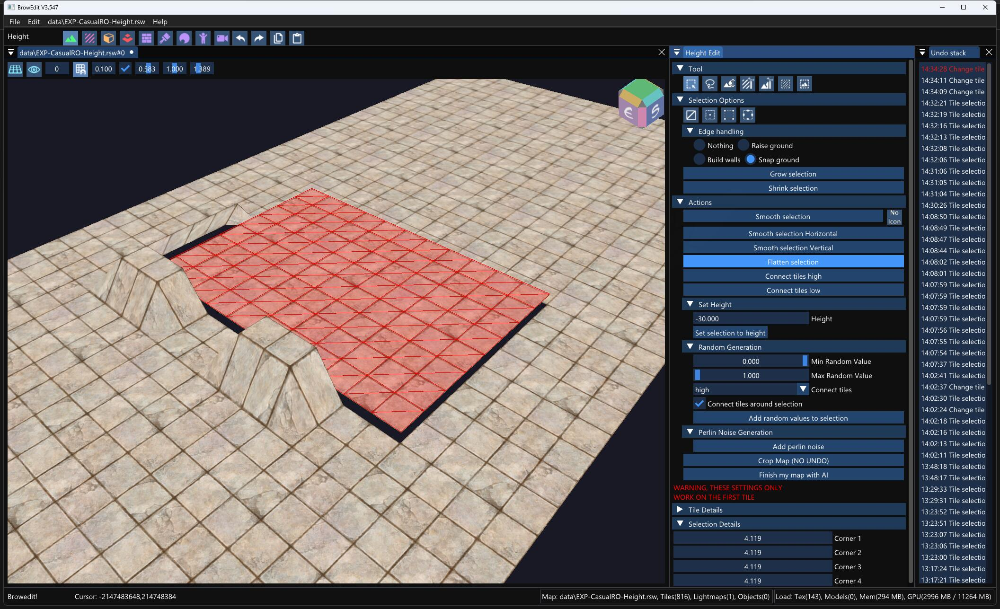
0x90 断裂贴片拼接
当我们使用 Flatten selection 扁平化选区、或者使用 Nothing 拉出地面后，都会造成地面贴片断裂的情况。
此时点击 Connect tiles high 连接高处贴片，选区会自动向比它位置更高的贴片接驳：
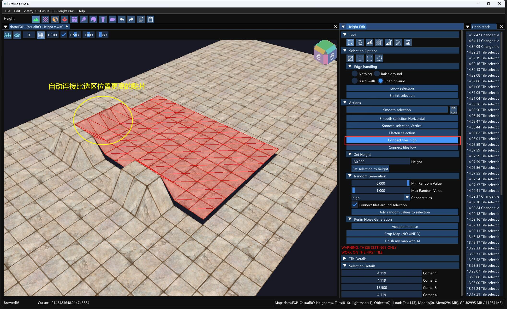
若点击 Connect tiles low 连接低处贴片，选区会自动向比它位置更低的贴片接驳：
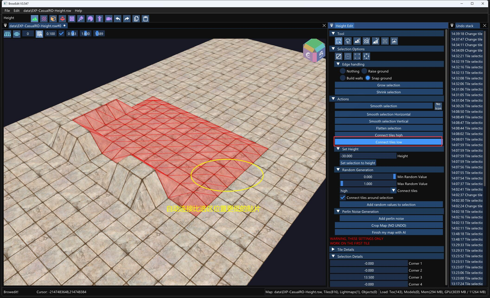
0xA0 精准高度设置
Set Height 精准设置高度在《「BrowEdit3 入门教程 02」 准备工作》中大家已经操作过了，这里只强调一下方向：负数为提高、正数则下沉。
可以配合
Flatten selection扁平化选区使用： 使得地形扁平化后、直接回到海拔为 0 的水平位置。
0xB0 随机地形
0xB1 渐变随机
在 Random Generation 可以设定随机地形，对于构建略微凹凸不平的地形可以用得上：
Min Random Value随机高度最小值：0-1Max Random Value随机高度最大值：0-1Connect tiles贴片间连接，贴片高度在随机变化后的自动连接方式，有三种方式：none： 不连接，和Nothing一样效果high: 效果和Connect tiles high一样low: 效果和Connect tiles low一样、
Connect tiles around selection连接选区贴片的四周： 使得随机地面与周边地面连接
过程中不断点击 Add random values to selection 即可实时看到随机地形逐渐变化的效果，随机参数可以随时变更：
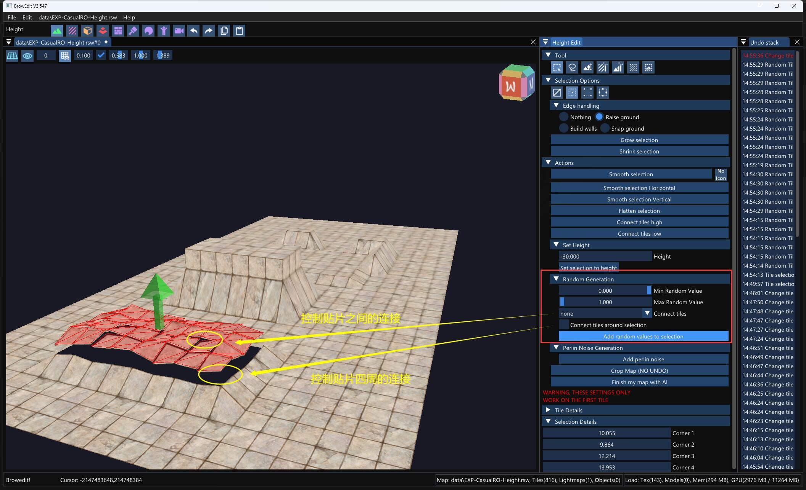
0xB2 柏林噪声（不可撤销）
如果说 Random Generation 适用于生成幅度不明显的随机地形，那么 Add perlin noise 添加柏林噪声就是生成幅度剧烈变化的随机地形，例如连绵不断的山脉湖泊：
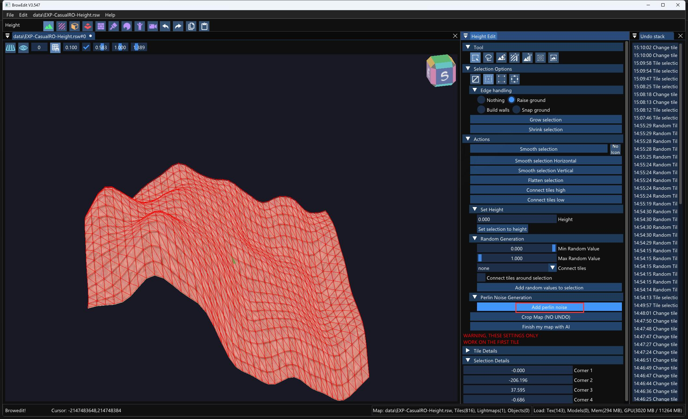
Add perlin noise 不需要设置任何参数，只要选定选区后点击即可自动生成，但是此操作不可撤销，使用前注意备份地图。
0xC0 地图裁剪（不可撤销）
有时候地图太大了，希望裁剪掉，此时只需要选中「希望保留的区域」：
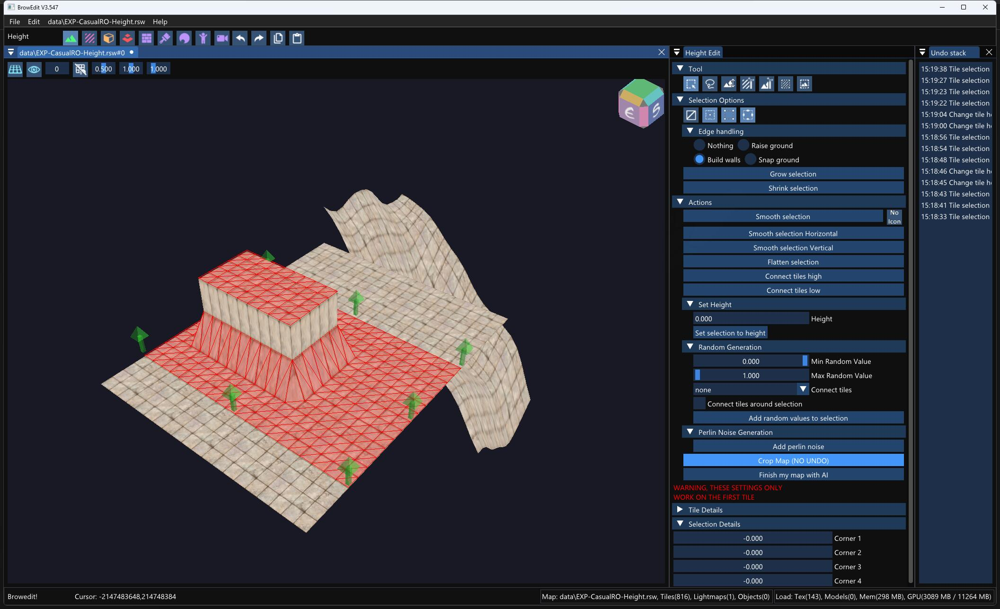
点击 Crop Map (NO UNDO) 裁剪地图，选区之外的地图则被直接删除，此操作不可撤销：
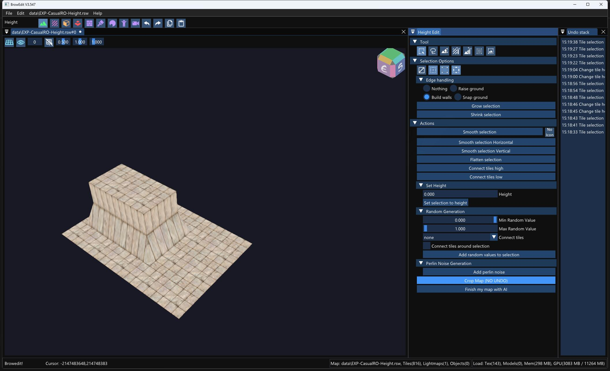
0xD0 AI 生成地形
Finish my map with AI 此按钮无任何作用，此按钮作者也承认就是用来搞笑的 …
0xE0 地形复制
最后说一个界面之外的技巧，如果有一个地形觉得做的不错，希望复制到其他地方，可以：
- 选中那个地形区域，按
Ctrl + C复制地形 - 按
Ctrl + V粘贴地形，会显示一个绿色的模型框架 - 在地图上找一个目标位置，点击鼠标左键，即可粘贴地形
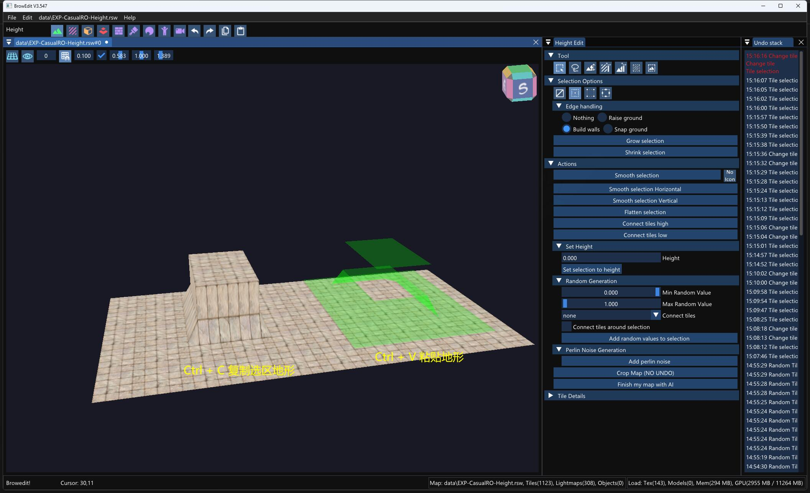
0xF0 参考资料
- 原版视频： Browedit 3 HEIGHT EDIT Full Course Tutorial
- 中英双语字幕： Browedit3 系列教程 3 - Height Edit
00:01:00: 准备工作00:05:32: 矩形选区（含箭头讲解）00:08:00: 地面拉出00:09:05: 地面拼接00:10:53: 地面抬高（Raise）00:11:04: 地面复制00:14:25: 断裂瓦片连接00:16:47: 精准高度设置00:18:59: 随机地形00:22:29: 地图尺寸裁剪00:23:28: 多边形选区00:25:31: 自由笔刷（山脉湖水）00:26:50: 魔法棒（相同纹理/高度选择）